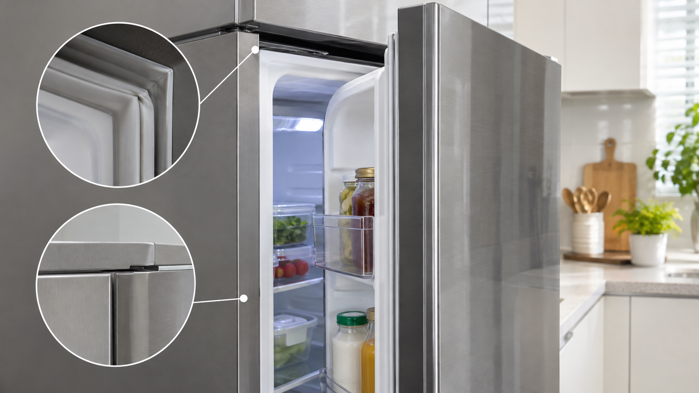

냉장고 문을 닫았는데도 알림음이 계속 울리면 음식물 걸림, 고무패킹, 수평 상태, 문 센서를 차례로 확인하세요. 문이 실제로 열려 있으면 냉기 손실과 결로가 생기므로 알림 기능만 끄고 방치하지 않는 것이 좋습니다.
문을 손으로 눌렀을 때만 알림이 멈추거나, 모든 문이 닫혔는데 표시창에 열림 표시가 남으면 문 정렬이나 센서 점검이 필요할 수 있습니다.
패킹 청소 후에도 알림이 반복되거나 문 처짐·힌지 소음·냉장 불량이 동반되면 모델명과 어느 문 표시가 뜨는지 기록하세요. 냉장고 문이 잘 닫히지 않을 때와 고무패킹 점검법도 참고하세요.
도어 알림 시간과 센서 위치는 제품별 제조사 사용설명서를 확인하세요.